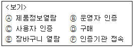
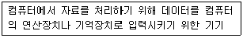
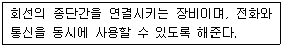
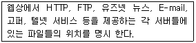
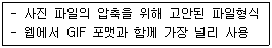

인터넷정보관리사-2급 (2008-08-31 기출문제)
1과목: 인터넷의 이해
1. 인터넷에 대한 설명으로 옳지 않은 것은?
- 시간과 공간의 제약 없이 원하는 정보를 제공 받을 수 있다.
- 인터넷의 효시는 상업적인 목적으로 개발된 NSFNET이다.
- 인터넷은 TCP/IP 표준 프로토콜로 연결된 네트워크들이 결합하여 이루어졌다.
- 클라이언트/서버 시스템을 기반으로 한다.
(정답률: 알수없음)

2. 인터넷의 양적 팽창을 나타내는 대표적인 지수로 인터넷에 연결되어 IP주소를 가지고 있으면서 이름이 네임 서버에 등록되어 있는 컴퓨터 수를 의미하는 것은?
- 호스트 수
- 리눅스 서버 수
- 인터넷 이용자 수
- 초고속 인터넷 가입자 수
(정답률: 72%)
3. 인터넷 도메인 네임을 구성하는 구성요소가 아닌 것은?
- 국가표시
- 기관의 이름
- 기관의 구분
- 웹 브라우저 종류
(정답률: 80%)
4. 인터넷의 다양한 정보 자원을 사용자들이 잘 활용할 수 있도록 제작한 문서는?
- FAQ(Frequently Asked Questions)
- FYI (For Your Information)
- IRG (Internet Resource Guide)
- RFC (Request for comments)
(정답률: 50%)
5. 하나의 IP주소에 여러 개의 도메인 이름을 매핑시켜 여러 개의 홈페이지를 각각 별도로 운영 할 수 있는 서비스는?
- 리얼 웹 서비스
- 멀티 웹 서비스
- 버추얼 웹 서비스
- 버추얼 도메인 네임 서비스
(정답률: 6%)
6. 국내 도메인에서 교육기관을 위한 2단계 도메인 연결에서 옳지 않은 것은?
- kg : 유치원
- ps : 초등학교
- ms : 중학교
- hs : 고등학교
(정답률: 77%)
7. 해외 도메인 구조에서 국가별 최상위 도메인 연결이 적합하지 않은 것은?
- au : 호주
- fr : 프랑스
- de : 독일
- nk : 북한
(정답률: 34%)
8. IP주소는 네트워크에 접속할 수 있는 컴퓨터 수의 규모에 따라 A클래스에서 E클래스까지 나뉘어지는데, IP주소가 225.225.225.255는 어떤 클래스에 해당되는가?
- B 클래스
- C 클래스
- D 클래스
- E 클래스
(정답률: 알수없음)
9. IPv6의 주요 특징으로 옳지 않은 것은?
- 32Bit 주소체계
- 라우팅과 주소지정 기능 확장
- IP-SEC 탑재로 인증ㆍ보안기능 동시 제공
- 실시간 멀티미디어 데이터를 처리할 수 있는 광대역폭 확보
(정답률: 70%)
10. 전자우편에서 메시지의 머리글만 우선 전송해 오고, 본문은 서버에 남겨두었다가 나중에 제목을 선택하여 본문을 다시 전송하는 것은?
- IMAP
- POP3
- SMTP
(정답률: 알수없음)
11. 메일링 리스트 본문에 쓰는 용어의 종류에 내용과 알맞지 않은 것은?
- info : 특정 메일링 리스트의 주제를 알려고 할 때
- lists : 리스트 서버에서 운영하는 리스트 목록을 얻으려 할 때
- who : 메일링 리스트의 그룹 명단을 얻으려 할 때
- subscribe : 특정 메일링 리스트에서 탈퇴할 때
(정답률: 알수없음)
12. FTP에 대한 설명으로 틀린 것은?
- 클라이언트 전용 프로그램으로 WS_FTP, Cute FTP 등이 있다.
- 인터넷 익스플로러를 사용하여 FTP서비스를 이용할 수도 있다.
- Anonymous FTP 이용 시 패스워드는 전화번호만을 사용한다.
- 파일의 송ㆍ수신 등을 할 수 있다.
(정답률: 57%)
13. FTP 관련 명령어 중 여러 개의 파일을 자신의 컴퓨터로 다운로드하기 위한 것은?
- mput
- mget
- put
- get
(정답률: 64%)
14. 유즈넷의 모 그룹에 대한 설명으로 틀린 것은?
- comp : 컴퓨터, 시스템 등
- biz : 사업, 상품, 서비스 등
- rec : 예술, 오락, 취미 등
- soc : 과학, 수학 등
(정답률: 알수없음)
15. 유즈넷에서 사용하는 용어에 대한 설명으로 틀린 것은?
- 포스팅(posting) : 뉴스그룹에 글을 등록하거나 파일을 올리는 것
- 다이제스트(digest) : 중재 그룹에서 기사를 요약한 것
- 헤더(header) : 자신이 쓴 글을 각 뉴스그룹 마다 해당 기사를 각각 반복해서 올리는 것
- 가입(subscribe) : 특정한 뉴스그룹을 보거나 해당 그룹에 글을 등록하기 위해 뉴스그룹에 참여하는 것
(정답률: 59%)
16. 메신저를 사용하여 상대방과 대화를 나눌 때 자신의 감정을 아스키(ASCII) 문자로 표현할 수 있다. 이것을 무엇이라 하는가?
- 두문자어(Acronym)
- 이모티콘(Emoticon)
- 채널(Channel)
- 아바타(Avatar)
(정답률: 82%)
17. 다음 중 화상채팅 시 가장 필요한 장비는?
- 스캐너
- PC 카메라
- 플로터
- 아날로그 카메라
(정답률: 60%)
18. 전자상거래 시장의 특징으로 가장 적합하지 않은 것은?
- 시간과 공간적인 제한이 있다.
- 중개인이 불필요한 완전시장이다.
- 거래비용이 거의 ZERO에 가깝다.
- 중간 유통 과정이 축소되고, 상품가격이 저렴하다.
(정답률: 알수없음)
19. 다음 <보기>에서 이용자 관점의 전자상거래 절차 내용에 해당되는 것은?

- A, B, C, F
- A, C, D, E
- B, C, D, F
- B, D, E, F
(정답률: 58%)
20. 전자서명법에 대한 사항 중 올바르지 않는 것은?
- 공인인증기관이 인증한 전자 서명에 대하여 법적 효력을 부여한다.
- 전자서명이란 전자 문서를 작성한 자의 신원과 전자 문서의 변경 여부를 확인하는 것을 목적으로 한다.
- 국가간 인증서에 대해서는 어떤 경우에도 상호 인정하지 않는다.
- 전자서명생성정보라 함은 전자서명을 생성하기 위하여 이용하는 전자적 정보를 말한다.
(정답률: 57%)
21. 공공기관의개인정보보호에관한법률의 적용을 받지 않는 정보가 아닌 것은?
- 정보주체의 동의가 있거나 정보주체에게 제공하는 경우
- 조약 기타 국제협정의 이행을 위하여 외국 정부 또는 국제기구에 제공하는 경우
- 통계작성 및 학술 연구 등의 목적을 위한 경우로서 특정 개인을 식별할 수 없는 형태로 제공하는 경우
- 기타 방송통신위원회에서 정하는 특별한 사유가 있는 경우
(정답률: 알수없음)
22. 본문의 내용과는 상관없는 악의적인 리플을 반복해서 달아놓는 사람을 무엇이라고 하는가?
- 스패머
- 악플러
- 크래커
- 리플러
(정답률: 67%)
23. 전자서명법에 관한 설명으로 옳지 않은 것은?
- 전자서명의 효력을 규정한 전자서명법의 가장 핵심적인 규정이다.
- 전자거래의 활성화를 위하여 공인인증기관이 인증한 전자서명에 대하여 법적 효력을 부여하고 있다.
- 전자서명은 서명 또는 기명날인과 동일한 효력을 가진다.
- 전자서명은 아직까지 문서 성립의 진정성의 확보와 문서의 증거력이 없다.
(정답률: 79%)
24. 네티켓에 대한 설명으로 가장 올바르지 않은 것은?
- 네티즌이 네트워크 상에서 지켜야할 예절을 말한다.
- 인터넷을 사용할 때는 동격의 상대이므로 특별한 예절이 없이 막말을 사용한다.
- 인터넷은 가상공간이므로 그에 따른 규범과 약속이 필요하다.
- 인터넷 문화를 정착시키기 위하여 네티켓을 지키는 것이 바람직하다.
(정답률: 알수없음)
25. 유즈넷의 네티켓으로 적합하지 않은 것은?
- 뉴스를 올리기 전에 이미 게시된 내용을 미리 살펴본다.
- 기사는 주제에 알맞은 그룹의 게시판에 올리도록 한다.
- 자신이 도움을 받았다면 다음에는 자신이 다른 사람을 도울 수 있도록 노력한다.
- 유즈넷 게시판은 누구나 자유롭게 사용할 수 있는 공개 게시판으로 개인적인 용도로만 사용한다.
(정답률: 88%)
26. 메신저를 사용할 때 네티켓으로 옳지 않은 것은?
- 올바른 언어를 사용한다.
- 상대편이 자신보다 나이가 어리면 프라이버시에 신경쓰지 않아도 된다.
- 만나고 헤어질 때는 인사를 한다.
- 약자를 적절히 사용하면 대화 속도를 빨리 할 수 있다.
(정답률: 82%)
27. 다음 설명에 해당하는 것은?

- 연산장치
- 디지타이저
- 플로터
- ROM
(정답률: 알수없음)
28. Windows XP에 대한 설명으로 틀린 것은?
- Windows 2000의 단점을 보완한 안정성을 갖춘 운영체제이다.
- 동시에 여러 프로그램을 실행할 수 있는 멀티태스킹을 지원한다.
- 개인 사용자용으로 한 대의 컴퓨터를 오직 한 사람만이 사용할 수 있다.
- GUI 기법의 사용자 중심 운영체제이다.
(정답률: 46%)
29. 유닉스 특성에 대한 설명으로 틀린 것은?
- 다중 작업은 불가능하다.
- 여러 명의 사용자가 동시에 컴퓨터를 사용 할 수 있는 멀티유저 시스템이다.
- 트리 구조의 파일 시스템을 갖는다.
- C언어로 대부분 구성되어 타 기종에 이식성이 좋다.
(정답률: 알수없음)
30. 파일 압축 프로그램이 아닌 것은?
- AlZIP
- Auto CAD
- WinZip
- WinRAR
(정답률: 64%)
31. 전용선을 이용한 인터넷 연결의 환경설정에서 꼭 필요한 정보로 가장 거리가 먼 것은?
- IP 주소
- 서브넷 마스크
- NetBEUI
- 게이트웨이
(정답률: 39%)
32. 다음은 ISDN의 접속 장비 중 어느 것에 해당 되는가?

- Network Terminator
- S-card
- U-card
- Terminal Adaptor
(정답률: 37%)
33. ADSL에 대한 설명으로 틀린 것은?
- 기존 전화선을 그대로 사용할 수 있다.
- 일반적으로 유동 IP주소 방식을 채택하고 있다.
- 원격진료, 원격회의, 영상회의 등의 양방향 서비스를 이용하기에 가장 적합하다.
- 비대칭 디지털 가입자 회선이라 부른다.
(정답률: 50%)
2과목: 인터넷 자원 탐색
34. 전용선과 전송속도가 바르게 연결된 것은?
- T1 : 3.048Mbps
- E1 : 8.544Mbps
- T2 : 12Mbps
- T3 : 45Mbps
(정답률: 34%)
35. xDSL을 이용한 접속의 종류에 대한 설명으로 올바르지 않은 것은?
- ADSL : 비대칭형 서비스로 상향에 비해 하향 속도가 빠르기 때문에 단방향 서비스에 적합하다.
- HDSL : 비대칭형 서비스로 T1/E1급 위주의 고속 전송에 사용되며, 화상회의에 적합하다.
- SDSL : 자원이용 효율이 높아 경제적이나 통신거리가 3Km이내여서 사내 화상회의 등에 사용한다.
- VDSL : VOD, 멀티미디어, 원격교육 등 대용량 데이터 처리에 적합하다.
(정답률: 47%)
36. URL 구성 요소에 포함되지 않는 것은?
- 접근할 포트 번호
- 해당 서버 내의 추가적인 경로
- 인터넷 서비스의 종류
- 인터넷 웹브라우저의 가격
(정답률: 54%)
37. 웹 문서에서 색깔을 지정할 때, 검정색을 나타내는 것은?
- #FF0000
- #000000
- #FFFFFF
- #0000FF
(정답률: 58%)
38. 잘 알려진 포트번호에 대한 연결로 틀린 것은?
- HTTP : 80
- NNTP : 119
- FTP : 21
- DNS : 73
(정답률: 67%)
39. 크래커가 시스템에 침입한 후 자신이 원할 때, 침입한 시스템을 재침입하거나 권한을 쉽게 획득하기 위하여 만들어 놓은 일종의 비밀 통로를 무엇이라 하는가?
- 전자서명
- SMS
- 백도어
- 바이러스
(정답률: 알수없음)
40. 다음 내용에 해당되는 것은 무엇인가?

- 웹 시스템
- URL
- POP3
- echo
(정답률: 50%)
41. CSS(Cascading Style Sheet)의 설명으로 틀린 것은?
- 운영체제나 사용하는 프로그램에 관계없이 웹페이지의 레이아웃을 효과적으로 처리 할 수 있다.
- 배경이미지를 자유롭게 설정할 수 있다.
- 여러 문서에서 똑같이 불러 쓸 수 있기 때문에 통일성 있는 웹페이지 제작이 가능하다.
- 확장자로 .wrl을 사용한다.
(정답률: 알수없음)
42. 웹 서버관련 검색 명령어의 설명으로 틀린 것은?
- NSLOOKUP : 특정 도메인 이름의 호스트에 부여된 IP 주소를 검색하는데 사용하는 명령이다.
- PING : 특정 호스트 컴퓨터가 정상적으로 작동하는가에 대한 동작 여부를 점검하는 명령이다.
- FINGER : 같은 시스템을 사용하는 사용자의 정보를 조회하거나 다른 시스템을 사용하는 사용자의 정보를 조회하는 명령이다.
- TRACERT : 특정 기관에 등록된 사용자나 호스트에 대한 정보를 검색하는 명령이다.
(정답률: 47%)
43. HTML의 태그로 공백(space)을 삽입하는 것은?
-
- ©
- <
- &
(정답률: 알수없음)
44. 제목의 글자크기를 변경하는 <Hn>태그에서 적용되는 n값의 범위는?
- 0부터 6까지
- 1부터 6까지
- 1부터 7까지
- 0부터 7까지
(정답률: 55%)
45. 파일 형식에 대한 설명으로 틀린 것은?
- *.txt는 아스키 문자를 저장한 메모장 파일을 의미한다.
- *.gul은 그래픽 작업을 한 이미지 파일을 의미한다.
- *.pcx는 비트맵 화상을 처리하기 위해 사용하는 파일 포맷이다.
- *.hwp는 한글 문서를 저장한 워드프로세서 파일을 의미한다.
(정답률: 70%)
46. 다음의 설명에 해당되는 것은?

- MP3
- PPT
- WMF
- JPG
(정답률: 54%)
47. 다음 중 멀티미디어의 특징으로 볼 수 없는 것은?
- 비선형성(Non-Linear)
- 양방향성(Interactive)
- 아날로그(Analog)
- 통합성(Integration)
(정답률: 67%)
48. 웹(Web)에 대한 설명으로 올바르지 않은 것은?
- 클라이언트/서버 구조로 이루어진 분산 하이퍼텍스트 시스템이다.
- 웹에서 사용하는 기본 프로토콜은 HTTP 프로토콜을 사용한다.
- 웹은 텍스트뿐만 아니라 대부분의 멀티미디어 파일 형태를 지원한다.
- 웹은 클라이언트 단독으로만 이루어져 있는 단독 시스템 구조이다.
(정답률: 54%)
49. 파일을 압축하게 되면 얻을 수 있는 효과로 가장 거리가 먼 것은?
- 하이퍼미디어와 하이퍼텍스트를 웹에서 표현할 수 있다.
- 여러 개의 파일을 하나로 묶을 수 있다.
- 파일의 크기를 줄일 수 있다
- 네트워크를 통한 파일 전송에 트래픽을 줄일 수 있다.
(정답률: 알수없음)
50. 파일의 확장자와 실행 프로그램의 연결로 가장 잘못된 것은?
- ASF - Windows Media Player
- PPT - Microsoft Word
- RA - RealPlayer
- MOV - QuickTime
(정답률: 알수없음)
51. 인터넷 검색 중 수학 문제 모음 파일인 math.pdf을 찾았다. 이 파일을 선택해서 내용을 확인하려고 하였으나 파일의 내용을 확인할 수 없었다. 어떤 프로그램을 설치하여야 이 파일의 내용을 확인할 수 있는가?
- 파워포인트
- 엑셀
- 알집
- 아크로뱃 리더
(정답률: 알수없음)
52. ATM에 대한 설명으로 틀린 것은?
- ATM에 대한 규정은 CCITT에서 권고한 것이다.
- ATM은 B-ISDN에서 사용된다.
- ATM셀은 100바이트인데, 그 중 헤더가 60바이트이고 정보 필드가 40바이트이다.
- ATM에서는 모든 정보를 ATM셀이라는 고정 길이의 블록으로 분할하여 이것을 순차적으로 전송한다.
(정답률: 34%)
53. 웹 브라우저는 WWW에서 모든 하이퍼텍스트와 하이퍼미디어 정보를 볼 수 있도록 해주는 응용 프로그램이다. 다음 중 텍스트 기반 웹브라우저는?
- Mosaic
- Samba
- HotJava
- Opera
(정답률: 40%)
54. 인터넷 익스플로러 6.0의 [보기]→[도구 모음] 메뉴에 해당하지 않는 것은?
- 표준 단추
- 주소 표시줄
- 상태 표시줄
- 연결
(정답률: 24%)
55. 인터넷 익스플로러 6.0에 대한 설명으로 틀린 것은?
- 자바 애플릿의 실행을 지원한다.
- 윈도우와 매킨토시 운영체제만 지원하고 있으며 유닉스 운영체제는 지원하지 않는다.
- CSS와 DHTML을 지원한다.
- ActiveX 컨트롤을 통해 동영상과 같은 멀티미디어 기능을 이용할 수 있다.
(정답률: 40%)
56. 인터넷 익스플로러 6.0의 보기 메뉴에 대한 설명으로 올바른 것은?
- 소스 : 브라우저 화면에 보여지는 글꼴의 크기를 지정한다.
- 개인정보보고서 : 페이지의 전송을 중지한다.
- 텍스트크기 : 웹 페이지의 문자 색상을 선택할 수 있다.
- 새로고침 : 웹 서버에 다시 접속하여 페이지를 전송해 온다.
(정답률: 알수없음)
57. 인터넷 익스플로러 6.0에서 프레임 구조로 되어 있지 않은 웹 사이트의 절대 주소를 알아 보려고 한다. 이 때 [파일] 메뉴에서 선택해야 할 항목은?
- 새로 만들기
- 속성
- 페이지 설정
- 가져오기 및 내보내기
(정답률: 36%)
58. 인터넷 익스플로러 6.0의 환경설정에 대한 설명으로 틀린 것은?
- 등급을 사용하여 볼 수 있는 인터넷 내용을 제한할 수 있다.
- 웹 브라우저의 접속 시 시작페이지의 설정을 바꿀 수 있다.
- 웹 페이지의 고유의 글꼴을 사용자 정의로 바꿀 수 있다.
- 열어본 페이지의 보관일수는 사용자가 임의로 변경할 수 없다.
(정답률: 46%)
59. 인터넷 익스플로러 6.0에서 사용되는 단축키의 연결이 틀린 것은?
- 열기 : Ctrl + O
- 모두선택 : Ctrl + A
- 전체화면 : F11
- 인쇄 : Ctrl + C
(정답률: 60%)
60. 인터넷 익스플로러 6.0에서 웹 페이지의 특정 단어를 빨리 찾을 때, 이용할 수 있는 방법으로 옳은 것은?
- [보기]-[이동]
- [보기]-[소스]
- [편집]-[이 페이지에서 찾기]
- [즐겨찾기]-[즐겨찾기 구성]
(정답률: 알수없음)
61. 인터넷 익스플로러 6.0에서 ‘즐겨찾기 구성’ 메뉴에 있는 기능으로 적절하지 않은 것은?
- 폴더 복사
- 이름 바꾸기
- 삭제
- 폴더 만들기
(정답률: 38%)
62. 인터넷 익스플로러 6.0에서 제공하는 일반적인 기능으로 가장 거리가 먼 것은?
- 현재 페이지를 다시 읽어 들이는 기능
- 이미지 수정ㆍ편집 기능
- 인쇄 미리보기 기능
- 전자메일로 페이지 보내기 기능
(정답률: 알수없음)
63. ‘검색엔진’이라는 키워드를 검색하여 특정 검색 엔진에서 검색된 정보가 80개이고, 이 중 40개가 적합한 정보로 판정되었다면 이 검색엔진의 정확율은?
- 40%
- 50%
- 60%
- 80%
(정답률: 46%)
64. 정보 검색식을 수립할 때 유의해야 할 사항으로 가장 적절하지 않은 것은?
- 키워드는 선정시 주제와 관련하여 다양하게 고려한다.
- 논리 연산자와 인접 연산자의 사용법을 정확하게 파악한 후에 사용한다.
- 영어의 대ㆍ소문자는 전혀 고려할 필요가 없다.
- 필요에 따라 절단 검색 기능도 적절히 활용한다.
(정답률: 36%)
65. 검색엔진의 구성요소를 바르게 짝지은 것은?
- 로봇, 색인기, 검색엔진 소프트웨어
- 캐시, 프레임, 검색엔진 소프트웨어
- 로봇, 프레임, 검색엔진 소프트웨어
- 로봇, 캐시, 검색엔진 소프트웨어
(정답률: 알수없음)
66. 바람직한 정보검색 방법으로 가장 적절하지 못한 것은?
- 여러 검색엔진을 사용해서 비교해 본다.
- 가능하면 키워드는 구체적으로 입력한다.
- 각 검색엔진별 도움말을 참고한다.
- 검색 연산자는 사용하지 않는다.
(정답률: 알수없음)
3과목: 인터넷 윤리
67. 웹 페이지의 헤더(Header)에 다음의 메타 태그를 넣었다면 무엇을 하기 위함인가?
- 로봇의 접근을 부분적으로 허용한다.
- 로봇의 접근을 모든 부분에서 허용한다.
- 로봇의 접근을 허용하지 않는다.
- 로봇의 접근을 최대한 유도한다.
(정답률: 알수없음)
68. 구글코리아(http://google.co.kr)의 메인페이지 상단에서 별도로 지원하지 않는 검색메뉴는?
- 카페
- 이미지
- 블로그
- 뉴스
(정답률: 42%)
69. 국내에서 개발된 검색엔진으로 바르게 짝지어 것은?
- 구글, 익사이트
- 야후, 구글
- 엠파스, 네이버
- 야후, 고
(정답률: 알수없음)
70. 대부분의 검색엔진들이 제공하는 검색엔진으로, 주제별 디렉토리 서비스와 키워드 검색 서비스를 동시에 제공하는 검색엔진을 뜻하는 용어는?
- 로봇 검색엔진
- 하이브리드형 검색엔진
- 멀티쓰레드 검색엔진
- 지능형 검색엔진
(정답률: 알수없음)
71. 엠파스에서 제공하는 블로그 서비스 메뉴가 아닌 것은?
- 브랜드 블로그
- 블로그 피플
- 블로그 산책
- 테마 스토리
(정답률: 10%)
72. 인물 정보를 대상으로 데이터베이스를 구축하여 전자우편 주소 등의 정보를 제공해주는 사이트를 일컫는 용어는?
- 비비시모(Vivisomo)
- 옐로우페이지(Yellow Page)
- 옐로우북(Yellow Book)
- 화이트페이지(White Page)
(정답률: 19%)
73. 검색어로 사용되는 단어의 유어의/동의어/반의어 등을 계층적인 관계와 종속적인 관계로 나타내주는 용어사전은?
- Perl
- Thread
- Thesaurus
- Mobile
(정답률: 37%)
74. 검색관련 용어 중 검색되었어야 함에도 불구하고 잘못된 검색어의 사용으로 누락된 정보를 일컫는 말은?
- 패치
- 리키지
- 스푸핑
- 크롤러
(정답률: 40%)
75. *, ? 등으로 절단 검색 등에 사용하여, 하나 또는 많은 문자를 나타내는 데 사용되는 키보드 문자를 뜻하는 용어는?
- 와일드 카드 문자
- 구문 문자
- 자연어 문자
- 인접 연산자
(정답률: 50%)
76. 다음 중 지식검색 기능이 없는 검색사이트는?
- 야후(http://kr.yahoo.com)
- 엠파스(http://www.empas.co.kr)
- 네이버(http://www.naver.com)
- 고(http://www.go.co.kr)
(정답률: 60%)
77. 국내의 인터넷 검색엔진을 통해 검색할 수 있는 정보영역으로 가장 거리가 먼 것은?
- 특정 기업의 날짜별 주가 변동 추세
- 언론매체에 게재된 기사 내용
- 개인 홈페이지에 등록한 이미지 파일
- 포털 사이트에 가입된 회원의 전자우편 본문 내용
(정답률: 67%)
78. IRC에서 사용되는 용어로 글자를 타이핑하는 시간을 줄이고 대화 속도를 지연시키지 않기 위해서 메시지를 약어로 표현한 것은?
- 스마일리
- 이모티콘
- 두문자어
- 아바타
(정답률: 58%)
79. 정보 검색사의 역할 중 고객의 요구에 알맞은 정보를 검색, 분석하여 제공하는 역할은?
- 정보 공개인 역할
- 정보 중개인 역할
- 정보 상담자 역할
- 정보 분석가 역할
(정답률: 30%)
80. 다음 중 1차 정보에 해당하지 않는 것은?
- 논문
- 초록지
- 보고서
- 잡지
(정답률: 알수없음)